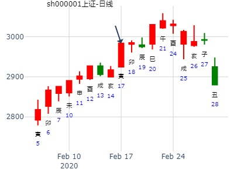

申月戊寅日占生意求急财，得“离之同人”
干支：申月 戊寅日 (旬空：申酉)
离宫：离为火（六冲） 离宫：天火同人（归魂）
六神 【本 卦】 【变 卦】
朱雀 ▅▅▅▅▅ 兄弟巳火 世 ▅▅▅▅▅ 子孙戌土 应
青龙 ▅▅ ▅▅ 子孙未土 ×→ ▅▅▅▅▅ 妻财申金
玄武 ▅▅▅▅▅ 妻财酉金 ▅▅▅▅▅ 兄弟午火
白虎 ▅▅▅▅▅ 官鬼亥水 应 ▅▅▅▅▅ 官鬼亥水 世
螣蛇 ▅▅ ▅▅ 子孙丑土 ▅▅ ▅▅ 子孙丑土
勾陈 ▅▅▅▅▅ 父母卯木 ▅▅▅▅▅ 父母卯木
求财妻财酉金作用神，卦中子孙未土独发，生旺用神酉金，世爻巳火又得日月照旺，由此形成“用旺世兴”的吉利卦局，此财可得。结果生意在当天完成，结帐却在次日。之所以吉兆应在第二天的卯日，是因为用神酉金空亡，应期层面需待冲空之卯日，方能受生应吉。此卦元神子孙化出的变爻申金，正是被日令冲起之爻，凭借月令的旺相故而短期有力，若把此信息误作是子孙未土动而化散无用，则很容易吉凶倒置。 -- 作者：朱辰彬
姓名：煊智 占事：海信电器1月4日-2月5日走势
起卦方式：手动摇卦 公历时间：2016年1月2日18时16分
干 支：乙未年 戊子月 癸未日 辛酉时
旬 空：辰巳 午未 (申酉) 子丑
离宫：离为火（六冲） 离宫：天火同人（归魂）
白虎 ▄▄▄▄▄ 兄弟己巳火 世 ▄▄▄▄▄ 子孙壬戌土 应
螣蛇 ▄▄ ▄▄ 子孙己未土 X ▄▄▄▄▄ 妻财壬申金
勾陈 ▄▄▄▄▄ 妻财己酉金 ▄▄▄▄▄ 兄弟壬午火
朱雀 ▄▄▄▄▄ 官鬼己亥水 应 ▄▄▄▄▄ 官鬼己亥水 世
青龙 ▄▄ ▄▄ 子孙己丑土 ▄▄ ▄▄ 子孙己丑土
玄武 ▄▄▄▄▄ 父母己卯木 ▄▄▄▄▄ 父母己卯木
一路下跌。
主帖标题: [讨论]还会继续降息吗？欢迎各位预测
其二：出生年：年 性别：男
占事: 何日再降息？起卦方式：手动摇卦 周易天地六爻线上排盘系统
公历时间：2009年2月15日19时47分
干支：己丑年 丙寅月 辛卯日 戊戌时 旬空：午未 戌亥 午未 辰巳
离宫：离为火（六冲） 离宫：天火同人（归魂）
六神 【本 卦】 【变 卦】
螣蛇 ▄▄▄▄▄ 兄弟己巳火 世 ▄▄▄▄▄ 子孙壬戌土 应
勾陈 ▄▄ ▄▄ 子孙己未土 X-> ▄▄▄▄▄ 妻财壬申金
朱雀 ▄▄▄▄▄ 妻财己酉金 ▄▄▄▄▄ 兄弟壬午火
青龙 ▄▄▄▄▄ 官鬼己亥水 应 ▄▄▄▄▄ 官鬼己亥水 世
玄武 ▄▄ ▄▄ 子孙己丑土 ▄▄ ▄▄ 子孙己丑土
白虎 ▄▄▄▄▄ 父母己卯木 ▄▄▄▄▄ 父母己卯木
自己断：
寅月应该不会降。
主帖标题: 占个年卦股，请大家帮忙看看 -出生年：1981年 性别：女
占事: 占600381此股在2015年（阴历）的走势
起卦方式：手动摇卦 周易天地线上排盘系统
公历时间：2015年2月12日21时2分
干支：乙未年 戊寅月 己未日 乙亥时
旬空：辰巳 申酉 子丑 申酉
离宫：离为火（六冲） 离宫：天火同人（归魂）
六神 【本 卦】 【变 卦】
勾陈 ▄▄▄▄▄ 兄弟己巳火 世 ▄▄▄▄▄ 子孙壬戌土 应
朱雀 ▄▄ ▄▄ 子孙己未土 X-> ▄▄▄▄▄ 妻财壬申金
青龙 ▄▄▄▄▄ 妻财己酉金 ▄▄▄▄▄ 兄弟壬午火
玄武 ▄▄▄▄▄ 官鬼己亥水 应 ▄▄▄▄▄ 官鬼己亥水 世
白虎 ▄▄ ▄▄ 子孙己丑土 ▄▄ ▄▄ 子孙己丑土
螣蛇 ▄▄▄▄▄ 父母己卯木 ▄▄▄▄▄ 父母己卯木
主帖标题: 测2020.2.12-2.14哪日是顶？
占事：测2020.1.6戊申星期一-1.10壬子哪日是顶？排卦：元亨利贞网
公历起卦时间：2020年2月15日16时18分 (电脑自动)
干支：庚子年 戊寅月 戊子日 庚申时 （日空：午未）
离宫：离为火 (六冲) 离宫：天火同人 (归魂)
六神 伏神 本 卦 变 卦
朱雀 兄弟己巳火 ▅▅▅▅▅ 世 子孙壬戌土 ▅▅▅▅▅ 应
青龙 子孙己未土 ▅▅ ▅▅ ╳→ 妻财壬申金 ▅▅▅▅▅
玄武 妻财己酉金 ▅▅▅▅▅ 兄弟壬午火 ▅▅▅▅▅
白虎 官鬼己亥水 ▅▅▅▅▅ 应 官鬼己亥水 ▅▅▅▅▅ 世
螣蛇 子孙己丑土 ▅▅ ▅▅ 子孙己丑土 ▅▅ ▅▅
勾陈 父母己卯木 ▅▅▅▅▅ 父母己卯木 ▅▅▅▅▅

此贴：标题与占事所贴有冲突，仅供参考。
注：唐龙这贴同一件事，反复电脑自动卦，游戏卦神，仅供参考。
主帖标题: 畜牝牛来了？一一2021年上证指数大盘预测
本帖隐藏的内容新历2021年2月3日23点为农历2021年的立春，故以新历2021年2月3日的收盘数据作为农历2020年收盘指数并作为起卦预测农历2021年的依据：
公历起卦时间：2021年2月3日14时44分 (手工指定)
干支：庚子年 己丑月 壬午日 丁未时 （日空：申酉）
神煞：驿马－申 桃花－卯 日禄－亥 贵人－卯，巳
离宫：离为火 (六冲) 离宫：天火同人 (归魂)
六神 伏神 本 卦 变 卦
白虎 兄弟己巳火 ▅▅▅▅▅ 世 子孙壬戌土 ▅▅▅▅▅ 应
螣蛇 子孙己未土 ▅▅ ▅▅ ╳→ 妻财壬申金 ▅▅▅▅▅
勾陈 妻财己酉金 ▅▅▅▅▅ 兄弟壬午火 ▅▅▅▅▅
朱雀 官鬼己亥水 ▅▅▅▅▅ 应 官鬼己亥水 ▅▅▅▅▅ 世
青龙 子孙己丑土 ▅▅ ▅▅ 子孙己丑土 ▅▅ ▅▅
玄武 父母己卯木 ▅▅▅▅▅ 父母己卯木 ▅▅▅▅▅
注意，此为数理卦，仅供娱乐。
主帖标题: T-Z-D-M上证指数擂台赛第九场第3局（2020年3月4日）Z方
公历起卦时间：2020年3月4日9时3分 (手工指定)
干支：庚子年 戊寅月 丙午日 癸巳时 （日空：寅卯）
离宫：离为火 (六冲) 离宫：天火同人 (归魂)
六神 伏神 本 卦 变 卦
青龙 兄弟己巳火 ▅▅▅▅▅ 世 子孙壬戌土 ▅▅▅▅▅ 应
玄武 子孙己未土 ▅▅ ▅▅ ╳→ 妻财壬申金 ▅▅▅▅▅
白虎 妻财己酉金 ▅▅▅▅▅ 兄弟壬午火 ▅▅▅▅▅
螣蛇 官鬼己亥水 ▅▅▅▅▅ 应 官鬼己亥水 ▅▅▅▅▅ 世
勾陈 子孙己丑土 ▅▅ ▅▅ 子孙己丑土 ▅▅ ▅▅
朱雀 父母己卯木 ▅▅▅▅▅ 父母己卯木 ▅▅▅▅▅
主帖标题: 转发“个股卦例及反馈”（三）
占事：至12月31日
公历起卦时间：2021年4月1日21时56分 (电脑自动)
干支：辛丑年 辛卯月 己卯日 乙亥时 （日空：申酉）
神煞：驿马－巳 桃花－子 日禄－午 贵人－子，申
离宫：离为火 (六冲) 离宫：天火同人 (归魂)
六神 伏神 本 卦 变 卦
勾陈 兄弟己巳火 ▅▅▅▅▅ 世 子孙壬戌土 ▅▅▅▅▅ 应
朱雀 子孙己未土 ▅▅ ▅▅ ╳→ 妻财壬申金 ▅▅▅▅▅
青龙 妻财己酉金 ▅▅▅▅▅ 兄弟壬午火 ▅▅▅▅▅
玄武 官鬼己亥水 ▅▅▅▅▅ 应 官鬼己亥水 ▅▅▅▅▅ 世
白虎 子孙己丑土 ▅▅ ▅▅ 子孙己丑土 ▅▅ ▅▅
螣蛇 父母己卯木 ▅▅▅▅▅ 父母己卯木 ▅▅▅▅▅
注：无股票名。
占事: 5月15日上证指数000001上午跳水，占问下行会反弹吗？
起卦方式：手动摇卦 周易天地www.64gua.com六爻线上排盘系统
公历时间：2007年5月15日12时11分
干支：丁亥年 乙巳月 己酉日 庚午时 旬空：午未 寅卯 寅卯 戌亥
神煞：驿马─亥 桃花─午 日禄─午 贵人─子，申
离宫：离为火（六冲） 离宫：天火同人（归魂）
六神 【本 卦】 【变 卦】
勾陈 ▄▄▄▄▄ 兄弟己巳火 世 ▄▄▄▄▄ 子孙壬戌土 应
朱雀 ▄▄ ▄▄ 子孙己未土 X-> ▄▄▄▄▄ 妻财壬申金
青龙 ▄▄▄▄▄ 妻财己酉金 ▄▄▄▄▄ 兄弟壬午火
玄武 ▄▄▄▄▄ 官鬼己亥水 应 ▄▄▄▄▄ 官鬼己亥水 世
白虎 ▄▄ ▄▄ 子孙己丑土 ▄▄ ▄▄ 子孙己丑土
螣蛇 ▄▄▄▄▄ 父母己卯木 ▄▄▄▄▄ 父母己卯木

怀疑当天冲卯木暗动，引发大跌。
主帖标题: 2020.05.12日上证指数擂台赛第十七场第2局 Z方（日测）
有兴趣一起来断一断
数理卦：
公历起卦时间：2020年5月11日22时13分 (手工指定)
干支：庚子年 辛巳月 甲寅日 乙亥时 （日空：子丑）
神煞：驿马－申 桃花－卯 日禄－寅 贵人－丑，未
离宫：离为火 (六冲) 离宫：天火同人 (归魂)
六神 伏神 本 卦 变 卦
玄武 兄弟己巳火 ▅▅▅▅▅ 世 子孙壬戌土 ▅▅▅▅▅ 应
白虎 子孙己未土 ▅▅ ▅▅ ╳→ 妻财壬申金 ▅▅▅▅▅
螣蛇 妻财己酉金 ▅▅▅▅▅ 兄弟壬午火 ▅▅▅▅▅
勾陈 官鬼己亥水 ▅▅▅▅▅ 应 官鬼己亥水 ▅▅▅▅▅ 世
朱雀 子孙己丑土 ▅▅ ▅▅ 子孙己丑土 ▅▅ ▅▅
青龙 父母己卯木 ▅▅▅▅▅ 父母己卯木 ▅▅▅▅▅

占事：南都电源未月如何？
排卦：元亨利贞网六爻在线排盘系统 http://www.china95.net
公历起卦时间：2014年7月4日12时30分 (在线摇卦)
干支：甲午年 庚午月 丙子日 甲午时 （日空：申酉）
离宫：离为火 (六冲) 离宫：天火同人 (归魂)
青龙 兄弟己巳火 ▅▅▅▅▅ 世 子孙壬戌土 ▅▅▅▅▅ 应
玄武 子孙己未土 ▅▅ ▅▅ ╳→ 妻财壬申金 ▅▅▅▅▅
白虎 妻财己酉金 ▅▅▅▅▅ 兄弟壬午火 ▅▅▅▅▅
腾蛇 官鬼己亥水 ▅▅▅▅▅ 应 官鬼己亥水 ▅▅▅▅▅ 世
勾陈 子孙己丑土 ▅▅ ▅▅ 子孙己丑土 ▅▅ ▅▅
朱雀 父母己卯木 ▅▅▅▅▅ 父母己卯木 ▅▅▅▅▅
六五：出涕沱若，戚嗟若，吉。象曰：六五之吉，离王公也。
注：与后面600718卦是四同卦，走向不一样。
性别：男 占事：东软集团未月涨跌如何？
排卦：元亨利贞网六爻在线排盘系统 http://www.china95.net
公历起卦时间：2014年7月4日12时54分 (在线摇卦)
干支：甲午年 庚午月 丙子日 甲午时 （日空：申酉）
离宫：离为火 (六冲) 离宫：天火同人 (归魂)
青龙 兄弟己巳火 ▅▅▅▅▅ 世 子孙壬戌土 ▅▅▅▅▅ 应
玄武 子孙己未土 ▅▅ ▅▅ ╳→ 妻财壬申金 ▅▅▅▅▅
白虎 妻财己酉金 ▅▅▅▅▅ 兄弟壬午火 ▅▅▅▅▅
腾蛇 官鬼己亥水 ▅▅▅▅▅ 应 官鬼己亥水 ▅▅▅▅▅ 世
勾陈 子孙己丑土 ▅▅ ▅▅ 子孙己丑土 ▅▅ ▅▅
朱雀 父母己卯木 ▅▅▅▅▅ 父母己卯木 ▅▅▅▅▅
未化申，但申空。虽说10日就出空，但是工作日申酉未出现，直到24-24日申酉日出现才开涨。另外，午火合绊未，是否也是一定因素？
注：与前面300068卦是四同卦，但走向不一样。
作者：晨皓 占事：002167东方锆业下周涨跌
公历起卦时间：2014年7月25日15时24分 (在线摇卦)
干支：甲午年 辛未月 丁酉日 戊申时 （日空：辰巳）
离宫：离为火 (六冲) 离宫：天火同人 (归魂)
六神 伏神 本 卦 变 卦
青龙 兄弟己巳火 ▅▅▅▅▅ 世 子孙壬戌土 ▅▅▅▅▅ 应
玄武 子孙己未土 ▅▅ ▅▅ ╳→ 妻财壬申金 ▅▅▅▅▅
白虎 妻财己酉金 ▅▅▅▅▅ 兄弟壬午火 ▅▅▅▅▅
腾蛇 官鬼己亥水 ▅▅▅▅▅ 应 官鬼己亥水 ▅▅▅▅▅ 世
勾陈 子孙己丑土 ▅▅ ▅▅ 子孙己丑土 ▅▅ ▅▅
朱雀 父母己卯木 ▅▅▅▅▅ 父母己卯木 ▅▅▅▅▅
世爻空，无故自空。
主帖标题: 2015-7-2周四银行股涨势喜人，附个股
六神 伏 神 离宫：离为火（六冲） 离宫：天火同人（归魂）
勾陈 世 ━━━ 兄弟己巳 应 ━━━ 子孙壬戌
朱雀 ━ ━ 子孙己未 ╳→ ━━━ 妻财壬申
青龙 ━━━ 妻财己酉 ━━━ 兄弟壬午
玄武 应 ━━━ 官鬼己亥 世 ━━━ 官鬼己亥
白虎 ━ ━ 子孙己丑 ━ ━ 子孙己丑
螣蛇 ━━━ 父母己卯 ━━━ 父母己卯
时间: 2015-07-02
干支: 乙未年壬午月己卯日 (旬空: 申酉 )
主题：8月25-8月31日黄金的走势 1282
甲午 壬申 丁卯 乙巳 (戌亥空) 甲午年七月廿九(2014/08/24 10:12:43)
离为火 天火同人
青龙 兄弟乙巳 ／ 世 子孙庚戌 ／ 应
玄武 子孙丁未 × 妻财戊申 ／
白虎 妻财己酉 ／ 兄弟丙午 ／
腾蛇 官鬼辛亥 ／ 应 官鬼辛亥 ／ 世
勾陈 子孙辛丑 ∥ 子孙辛丑 ∥
朱雀 父母癸卯 ／ 父母癸卯 ／
离之同人，子化财。占2014年8月27日大盘。
时间: 2014-08-26
干支: 甲午年壬申月己巳日 (旬空: 戌亥 )
离为火 天火同人(归魂)
六神 伏神 本 卦 变 卦
勾陈 ▅▅▅▅▅ 兄弟巳火 世 ▅▅▅▅▅ 子孙戌土 应
朱雀 ▅▅ ▅▅ 子孙未土 Ｘ→ ▅▅▅▅▅ 妻财申金
青龙 ▅▅▅▅▅ 妻财酉金 ▅▅▅▅▅ 兄弟午火
玄武 ▅▅▅▅▅ 官鬼亥水 应 ▅▅▅▅▅ 官鬼亥水 世
白虎 ▅▅ ▅▅ 子孙丑土 ▅▅ ▅▅ 子孙丑土
腾蛇 ▅▅▅▅▅ 父母卯木 ▅▅▅▅▅ 父母卯木
主帖标题: 8月9至8月13日大盘预测
公历时间：2021年8月7日7时49分
干 支：辛丑年 乙未月 丁亥日 甲辰时
旬 空：辰巳 辰巳 午未 寅卯
离宫：离为火（六冲） 离宫：天火同人（归魂）
六神 【本 卦】 【变 卦】
青龙 ▄▄▄▄▄ 兄弟己巳火 世 ▄▄▄▄▄ 子孙壬戌土 应
玄武 ▄▄ ▄▄ 子孙己未土 × ▄▄▄▄▄ 妻财壬申金
白虎 ▄▄▄▄▄ 妻财己酉金 ▄▄▄▄▄ 兄弟壬午火
螣蛇 ▄▄▄▄▄ 官鬼己亥水 应 ▄▄▄▄▄ 官鬼己亥水 世
勾陈 ▄▄ ▄▄ 子孙己丑土 ▄▄ ▄▄ 子孙己丑土
朱雀 ▄▄▄▄▄ 父母己卯木 ▄▄▄▄▄ 父母己卯木
占事：万科近三个月行情如何？
公历时间：2014年10月7日11时45分
甲午年癸酉月辛亥日甲午时 (寅卯)
离宫：离为火（六冲） 离宫：天火同人（归魂）
六神 【本 卦】 【变 卦】
螣蛇 ▄▄▄▄▄ 兄弟己巳火 世 ▄▄▄▄▄ 子孙壬戌土 应
勾陈 ▄▄ ▄▄ 子孙己未土 X-> ▄▄▄▄▄ 妻财壬申金
朱雀 ▄▄▄▄▄ 妻财己酉金 ▄▄▄▄▄ 兄弟壬午火
青龙 ▄▄▄▄▄ 官鬼己亥水 应 ▄▄▄▄▄ 官鬼己亥水 世
玄武 ▄▄ ▄▄ 子孙己丑土 ▄▄ ▄▄ 子孙己丑土
白虎 ▄▄▄▄▄ 父母己卯木 ▄▄▄▄▄ 父母己卯木
世爻日破，在月破的亥月涨最猛。
难道兄弟持世，真是越破越好？子月也是飞涨。
占事: 占上证指数下周涨跌 行者问道
起卦方式：手动摇卦 周易天地www.64gua.com六爻线上排盘系统
公历时间：2014年10月24日14时11分
干支：甲午年 甲戌月 戊辰日 己未时 旬空：辰巳 申酉 戌亥 子丑
离宫：离为火（六冲） 离宫：天火同人（归魂）
六神 【本 卦】 【变 卦】
朱雀 ▄▄▄▄▄ 兄弟己巳火 世 ▄▄▄▄▄ 子孙壬戌土 应
青龙 ▄▄ ▄▄ 子孙己未土 X-> ▄▄▄▄▄ 妻财壬申金
玄武 ▄▄▄▄▄ 妻财己酉金 ▄▄▄▄▄ 兄弟壬午火
白虎 ▄▄▄▄▄ 官鬼己亥水 应 ▄▄▄▄▄ 官鬼己亥水 世
螣蛇 ▄▄ ▄▄ 子孙己丑土 ▄▄ ▄▄ 子孙己丑土
勾陈 ▄▄▄▄▄ 父母己卯木 ▄▄▄▄▄ 父母己卯木
主帖标题: 10月14日沪市走势
占事：沪市走势
公历时间：2015年10月13日15时30分
干 支：乙未年 丙戌月 壬戌日 戊申时
旬 空：辰巳 午未 (子丑) 寅卯
离宫：离为火（六冲） 离宫：天火同人（归魂）
六神 【本 卦】 【变 卦】
白虎 ▄▄▄▄▄ 兄弟己巳火 世 ▄▄▄▄▄ 子孙壬戌土 应
螣蛇 ▄▄ ▄▄ 子孙己未土 X-> ▄▄▄▄▄ 妻财壬申金
勾陈 ▄▄▄▄▄ 妻财己酉金 ▄▄▄▄▄ 兄弟壬午火
朱雀 ▄▄▄▄▄ 官鬼己亥水 应 ▄▄▄▄▄ 官鬼己亥水 世
青龙 ▄▄ ▄▄ 子孙己丑土 ▄▄ ▄▄ 子孙己丑土
玄武 ▄▄▄▄▄ 父母己卯木 ▄▄▄▄▄ 父母己卯木
今天应该还不错，午后拉升？
梦中的先上楼再下楼情形在股市何时发生-金
时间: 2024-10-06
干支: 甲辰年癸酉月癸卯日 (旬空: 辰巳 )
离为火 天火同人(归魂)
六神 伏神 本 卦 变 卦
白虎 ▅▅▅▅▅ 兄弟巳火 世 ▅▅▅▅▅ 子孙戌土 应
腾蛇 ▅▅ ▅▅ 子孙未土 Ｘ→ ▅▅▅▅▅ 妻财申金
勾陈 ▅▅▅▅▅ 妻财酉金 ▅▅▅▅▅ 兄弟午火
朱雀 ▅▅▅▅▅ 官鬼亥水 应 ▅▅▅▅▅ 官鬼亥水 世
青龙 ▅▅ ▅▅ 子孙丑土 ▅▅ ▅▅ 子孙丑土
玄武 ▅▅▅▅▅ 父母卯木 ▅▅▅▅▅ 父母卯木
主帖标题: [原创]每日预测深沪两市大盘指数
公历时间：2007年11月2日9时30分 星期五
干支：丁亥年 庚戌月 庚子日 辛巳时 (旬空：辰巳)
离为火 天火同人(归魂)
六神 伏神 本 卦 变 卦
腾蛇 ▅▅▅▅▅ 兄弟巳火 世 ▅▅▅▅▅ 子孙戌土 应
勾陈 ▅▅ ▅▅ 子孙未土 Ｘ→ ▅▅▅▅▅ 妻财申金
朱雀 ▅▅▅▅▅ 妻财酉金 ▅▅▅▅▅ 兄弟午火
青龙 ▅▅▅▅▅ 官鬼亥水 应 ▅▅▅▅▅ 官鬼亥水 世
玄武 ▅▅ ▅▅ 子孙丑土 ▅▅ ▅▅ 子孙丑土
白虎 ▅▅▅▅▅ 父母卯木 ▅▅▅▅▅ 父母卯木
精武门陈真 -起卦方式：时间起卦 -梅花易数在线算卦
公历时间：2013年11月13日14时13分
干 支：癸巳年 癸亥月 癸未日 己未时 （申酉空）
主 卦 互 卦 变 卦 错 卦 综 卦
离为火 兑 巽 天火同人 坎为水 离为火
▄▄▄▄▄ ▄▄ ▄▄ ▄▄▄▄▄ ▄▄ ▄▄ ▄▄▄▄▄
×▄▄ ▄▄ ▄▄▄▄▄ ▄▄▄▄▄ ▄▄▄▄▄ ▄▄ ▄▄
▄▄▄▄▄ ▄▄▄▄▄ ▄▄▄▄▄ ▄▄ ▄▄ ▄▄▄▄▄
▄▄▄▄▄ ▄▄▄▄▄ ▄▄▄▄▄ ▄▄ ▄▄ ▄▄▄▄▄
▄▄ ▄▄ ▄▄▄▄▄ ▄▄ ▄▄ ▄▄▄▄▄ ▄▄ ▄▄
▄▄▄▄▄ ▄▄ ▄▄ ▄▄▄▄▄ ▄▄ ▄▄ ▄▄▄▄▄
离宫：离为火 (六冲) 离宫：天火同人 (归魂)
本 卦 变 卦
兄弟己巳火 ▅▅▅▅▅ 世 子孙壬戌土 ▅▅▅▅▅ 应
子孙己未土 ▅▅ ▅▅ ╳→ 妻财壬申金 ▅▅▅▅▅
妻财己酉金 ▅▅▅▅▅ 兄弟壬午火 ▅▅▅▅▅
官鬼己亥水 ▅▅▅▅▅ 应 官鬼己亥水 ▅▅▅▅▅ 世
子孙己丑土 ▅▅ ▅▅ 子孙己丑土 ▅▅ ▅▅
父母己卯木 ▅▅▅▅▅ 父母己卯木 ▅▅▅▅▅
六五：出涕沱若，戚嗟若，吉。
象曰：六五之吉，离王公也。
马后炮：兄弟持世，世爻月破。有利求财。
主帖标题: 大众交通明天涨跌？
出生：没填 年 性别：男 占事：
干支：甲午年 甲戌月 己卯日 壬申时 （日空：申酉）
离宫：离为火 (六冲) 离宫：天火同人 (归魂)
六神 伏神 本 卦 变 卦
勾陈 兄弟己巳火 ▅▅▅▅▅ 世 子孙壬戌土 ▅▅▅▅▅ 应
朱雀 子孙己未土 ▅▅ ▅▅ ╳→ 妻财壬申金 ▅▅▅▅▅
青龙 妻财己酉金 ▅▅▅▅▅ 兄弟壬午火 ▅▅▅▅▅
玄武 官鬼己亥水 ▅▅▅▅▅ 应 官鬼己亥水 ▅▅▅▅▅ 世
白虎 子孙己丑土 ▅▅ ▅▅ 子孙己丑土 ▅▅ ▅▅
腾蛇 父母己卯木 ▅▅▅▅▅ 父母己卯木 ▅▅▅▅▅
现价8.40元
主帖标题: [原创]每日预测深沪两市大盘指数
公历时间：2007年12月13日9时30分 星期四
干支：丁亥年 壬子月 辛巳日 癸巳时 (旬空：申酉)
离为火 天火同人(归魂)
六神 伏神 本 卦 变 卦
腾蛇 ▅▅▅▅▅ 兄弟巳火 世 ▅▅▅▅▅ 子孙戌土 应
勾陈 ▅▅ ▅▅ 子孙未土 Ｘ→ ▅▅▅▅▅ 妻财申金
朱雀 ▅▅▅▅▅ 妻财酉金 ▅▅▅▅▅ 兄弟午火
青龙 ▅▅▅▅▅ 官鬼亥水 应 ▅▅▅▅▅ 官鬼亥水 世
玄武 ▅▅ ▅▅ 子孙丑土 ▅▅ ▅▅ 子孙丑土
白虎 ▅▅▅▅▅ 父母卯木 ▅▅▅▅▅ 父母卯木
主帖标题: 300238冠昊生物本周涨跌
明天涨跌
公历时间：2019年12月23日22时33分
干 支：己亥年 丙子月 甲午日 乙亥时
旬 空：辰巳 申酉 辰巳 申酉
离宫：离为火（六冲） 离宫：天火同人（归魂）
六神 【本 卦】 【变 卦】
玄武 ▄▄▄▄▄ 兄弟己巳火 世 ▄▄▄▄▄ 子孙壬戌土 应
白虎 ▄▄ ▄▄ 子孙己未土 × ▄▄▄▄▄ 妻财壬申金
螣蛇 ▄▄▄▄▄ 妻财己酉金 ▄▄▄▄▄ 兄弟壬午火
勾陈 ▄▄▄▄▄ 官鬼己亥水 应 ▄▄▄▄▄ 官鬼己亥水 世
朱雀 ▄▄ ▄▄ 子孙己丑土 ▄▄ ▄▄ 子孙己丑土
青龙 ▄▄▄▄▄ 父母己卯木 ▄▄▄▄▄ 父母己卯木